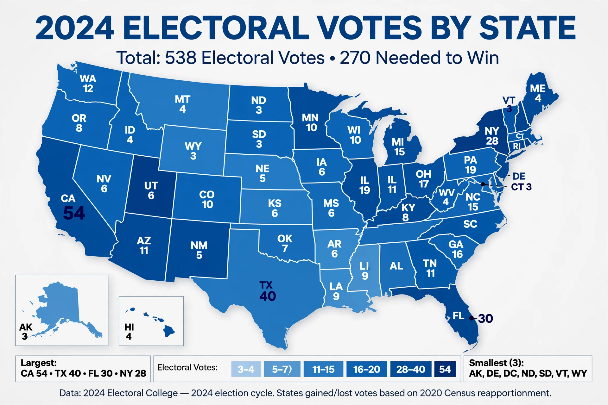

United States Electoral College

The Electoral College is the body of electors established by the United States Constitution that formally elects the president and vice president. It consists of 538 electors — equal to the total membership of Congress (435 representatives plus 100 senators) plus three for the District of Columbia under the Twenty-third Amendment. A majority of 270 electoral votes is required to win the presidency.
How it works
Voters in each state vote not directly for candidates but for slates of electors pledged to them. In 48 states, the slate that wins the state's popular vote receives all of that state's electoral votes ("winner take all"); Maine and Nebraska allocate two electors to the statewide winner and one to the winner of each congressional district. Electors meet in their state capitals in December — the "meeting of the electors" — to cast separate ballots for president and vice president, as required by the Twelfth Amendment. Congress counts the votes in January. If no candidate reaches 270, the House of Representatives holds a contingent election, voting by state delegation.
History and controversies
The system was a compromise at the Constitutional Convention between election by Congress and direct national popular vote, shaped also by federalism and the politics of slavery and representation. Five presidents have taken office while losing the national popular vote: John Quincy Adams (1824, decided by the House), Rutherford B. Hayes (1876), Benjamin Harrison (1888), George W. Bush (2000) and Donald Trump (2016).
Occasional electors vote against their pledge — so-called faithless electors — though they have never changed an outcome. Critics argue the College distorts campaigning toward a few swing states, misrepresents the national vote, and gives small states disproportionate weight; defenders cite federalism, the need for geographically broad coalitions, and stability. The National Popular Vote Interstate Compact, under which signatory states pledge their electors to the national popular-vote winner, had been adopted by states controlling a substantial bloc of electoral votes by the mid-2020s, but takes effect only once pledged states reach 270.